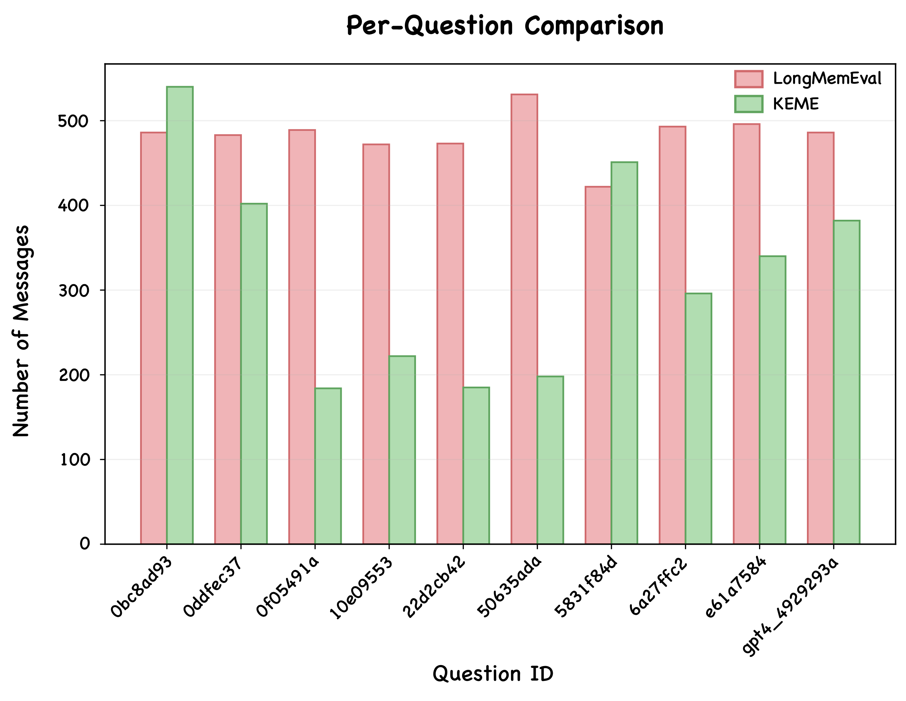
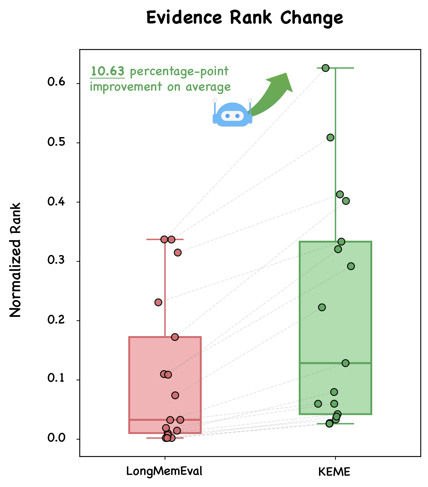
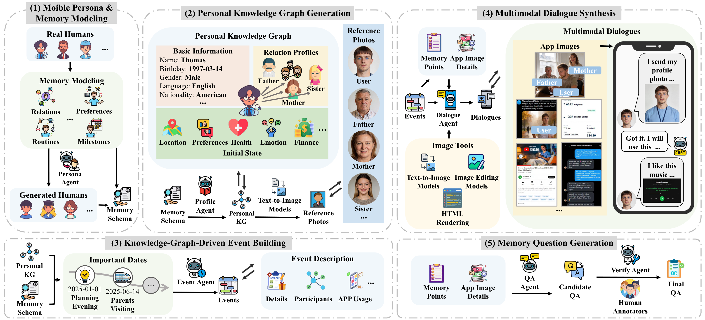
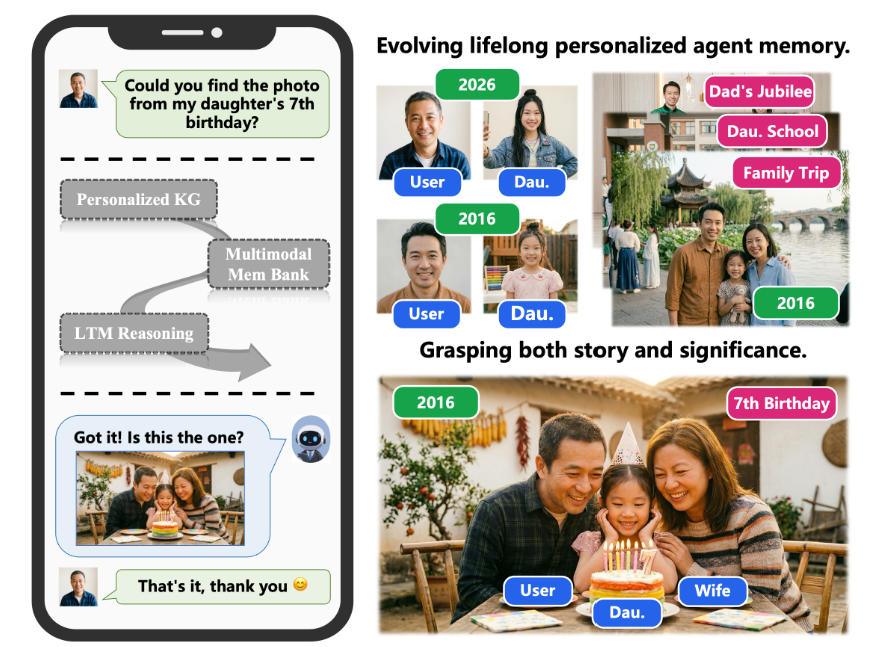
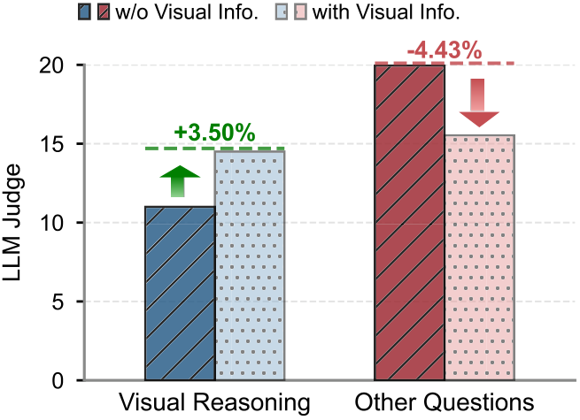
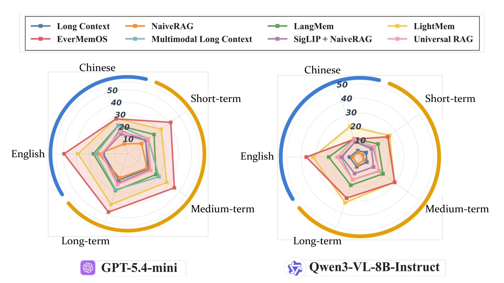
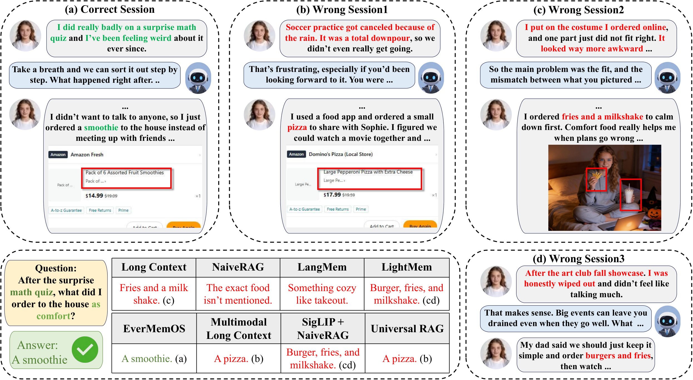

Reserved section
Content will be added here after the corresponding LaTeX manuscript section is synchronized.
Preprint · OPPO × OpenKG
MobileMem, featuring real-user participation, multimodal interactions, and multi-source content, is established through a multi-stage pipeline.
Overview
This overview area is intentionally left open and will be filled after the corresponding LaTeX manuscript sections are synchronized.
Content will be added here after the corresponding LaTeX manuscript section is synchronized.
Content will be added here after the corresponding LaTeX manuscript section is synchronized.
Content will be added here after the corresponding LaTeX manuscript section is synchronized.
Reserved for manuscript figure
Core Framework
KEME treats the fragmented user-app sessions as foundational knowledge anchors that reflect what has already occurred and must be preserved. Guided by user persona knowledge and temporal constraints, KEME hierarchically organizes these anchored sessions into a unified interaction stream.
Builds a temporal event graph and recursively expands it.
Assigns anchored app sessions to compatible event nodes.
Synthesizes leaf sessions and drives persona evolution.
Updates the remaining graph in a bottom-up feedback loop.
§4.3 · QA Synthesis & Quality Control
The entire trajectory construction process can be conceptualized as the generation of a hierarchical tree structure.
Each leaf generates question-answer pairs from its own trajectory segment.
Each node uses child QA as building blocks to synthesize complex cross-session questions; unused child pairs are sampled and passed upward.
During traversal the agent can extend the question-type tool book with new types on the fly.
Manual spot-checks across agent outputs; KEME's tuned prompts and built-in verification keep quality consistently high.
Overlapping sessions from simultaneous independent events are merged, followed by author-led manual inspection.
LLMs verify evidence sufficiency and flag highly similar or redundant questions; low-quality items are rewritten by an LLM.
A final manual inspection eliminates any remaining artifacts to guarantee reliability.
Examples across QA types
§4.5 · Experiments & Analysis
We further evaluate whether KEME can synthesize answer-preserving but retrieval-harder trajectories.
| RAG | EverMemOS | |||
|---|---|---|---|---|
| Top-k=5 | Top-k=10 | Top-k=5 | Top-k=10 | |
| LongMemEval | 40.00 | 50.00 | 90.00 | 100.00 |
| KEME | 20.00 | 40.00 | 80.00 | 90.00 |
(a) Average performance across two memory systems on LongMemEval and KEME



§5.1 · Benchmark Construction
As illustrated below, MobileMem —featuring real-user participation, multimodal interactions, and multi-source content —is established through a multi-stage pipeline. Specifically, the benchmark includes 16 distinct user trajectories.
To balance authenticity, diversity, and scalability, MobileMem builds personas through a hybrid approach: half are derived from representative hired participants that reference real participant data, and half are virtual personas generated from those real examples. A unified Schema then organizes basic attributes, previous-year status, and key milestones into the core memory structure —8 real and 8 virtual personas in total.
Each persona is represented by three components: a basic information vector B capturing core identity and background, an initial state vector S capturing status and daily patterns before interaction, and a personal knowledge graph G built from social relationships. G centers on the persona, with frequent and significant contacts as surrounding nodes; every node description is enriched by GPT-5.1 and turned into reference photos via the Seedream text-to-image model.
Driven by the persona knowledge graph, MobileMem generates the events that form the backbone of each trajectory in three stages: Important Date Collection anchors personally and culturally significant dates; Event Building expands them into a personalized one-year event sequence; and Step Breakdown decomposes every event into temporally ordered sub-event steps, each annotated with the mobile apps and image types involved.
Event steps become concrete multimodal dialogues in two phases. Memory Point Decomposition breaks each step into fine-grained textual and visual memory points; Session Generation then lets GPT-5.1 act as an agent to weave them into natural dialogue turns and matching images —produced via HTML rendering, text-to-image, and image-editing tools, with reference photos keeping characters consistent. Sessions are concatenated in temporal order into the full trajectory.
To systematically assess memory systems, evaluation questions are built from the generated memory points and step information. They span seven categories: Single-Hop, Multi-Hop, Knowledge Update, Temporal Reasoning, Implicit Preference, Abstention, and Visual Reasoning.
§5 · Dataset at a Glance

To systematically assess memory system performance, we construct evaluation questions based on the generated memory points and step information using GPT-5.1. The question set covers seven predefined categories: (1) Single-Hop: retrieve a single factual piece; (2) Multi-Hop: synthesize information from multiple factual pieces; (3) Knowledge Update: incorporate new information and revise outdated memory; (4) Temporal Reasoning: capture time-related cues and reason; (5) Implicit Preference: infer latent user attributes or preferences; (6) Abstention: correctly decline to answer when information is absent; (7) Visual Reasoning: interpret and reason over visual content.
A key feature is that these visual content originate from diverse sources, including device cameras, mobile applications, and shared media. This multi-source design ensures that the benchmark reflects the heterogeneous nature of real-world mobile experiences. Additionally, the benchmark supports multilingual interactions, where users may communicate in different languages based on their linguistic background, and memory systems must maintain cross-lingual consistency.
Image generation tools
For image generation, we employ three types of tools: HTML rendering, text-to-image models, and image editing models. For text-to-image and image-editing models, Seedream is the primary choice; when the generation quality is unsatisfactory, other models are used sequentially as alternatives.
To ensure the reliability, we apply quality control procedures to both generated images and evaluation questions. After the filtering process, a total of 19,060 images and 7,415 question-answer pairs are retained in the final benchmark.
We employ GPT-5.1 as an image filtering agent to assess generated images. For images involving human faces generated by image-editing models, we additionally apply face-recognition tools from the InsightFace library to compare against the persona's initial reference photos, filtering out images below the similarity threshold for same-person identification.
We use GPT-5.1 as a question quality agent to automatically evaluate each generated question, checking whether it can be correctly answered based on the source memory points and filtering out questions with unreasonable information or answer errors.
§5.2 · Results
As shown in Table, we observe a clear performance hierarchy across different families of approaches. Specialized memory-augmented frameworks consistently outperform long context and RAG types of methods across almost all tasks and backbone models.
| Method | Single | Multi | Update | Temporal | Abst. | Pref. | Visual | Judge | F1 |
|---|---|---|---|---|---|---|---|---|---|
| GPT-5.4-mini | |||||||||
| Long Context | 17.2 | 10.2 | 21.5 | 19.3 | 18.1 | 34.0 | 12.2 | 19.1 | 20.5 |
| NaiveRAG | 24.9 | 20.4 | 16.5 | 19.0 | 7.4 | 8.6 | 14.5 | 15.4 | 10.4 |
| LangMem | 21.8 | 19.2 | 27.5 | 29.9 | 12.0 | 49.0 | 15.0 | 24.9 | 7.5 |
| Mem0 | 26.9 | 25.9 | 27.3 | 27.4 | 7.1 | 44.0 | 15.0 | 24.7 | 9.6 |
| LightMem | 37.4 | 33.0 | 38.2 | 38.9 | 19.2 | 46.3 | 25.8 | 33.8 | 21.5 |
| EverMemOS | 47.0 | 40.4 | 46.8 | 43.5 | 7.0 | 60.3 | 34.1 | 39.4 | 12.2 |
| Qwen3-VL-8B-Instruct | |||||||||
| Long Context | 4.1 | 4.3 | 5.1 | 9.2 | 6.3 | 6.5 | 6.8 | 5.9 | 12.8 |
| NaiveRAG | 5.1 | 5.6 | 2.8 | 5.3 | 7.5 | 0.7 | 2.4 | 4.2 | 4.4 |
| LangMem | 17.4 | 14.2 | 18.7 | 17.1 | 13.8 | 30.2 | 8.2 | 17.3 | 2.4 |
| Mem0 | 25.9 | 23.2 | 31.8 | 23.7 | 13.0 | 50.5 | 16.8 | 26.7 | 8.8 |
| LightMem | 30.1 | 26.4 | 29.7 | 23.2 | 20.8 | 36.1 | 22.2 | 27.1 | 16.9 |
| EverMemOS | 28.1 | 27.2 | 27.8 | 26.3 | 13.8 | 32.0 | 19.2 | 24.8 | 3.6 |
| Method | Single | Multi | Update | Temporal | Abst. | Pref. | Visual | Judge | F1 |
|---|---|---|---|---|---|---|---|---|---|
| GPT-5.4-mini | |||||||||
| Multimodal Long Context | 34.9 | 20.4 | 30.9 | 31.3 | 14.0 | 17.2 | 21.9 | 24.4 | 18.3 |
| SigLIP + NaiveRAG | 23.1 | 16.8 | 19.7 | 18.1 | 4.8 | 33.8 | 9.6 | 18.0 | 10.0 |
| Universal RAG | 22.6 | 17.6 | 22.1 | 21.2 | 4.9 | 39.0 | 7.6 | 19.3 | 9.5 |
| M²A | 22.6 | 17.6 | 22.1 | 21.2 | 4.9 | 39.0 | 7.6 | 19.3 | 9.5 |
| Qwen3-VL-8B-Instruct | |||||||||
| Multimodal Long Context | 16.7 | 11.6 | 18.3 | 19.0 | 1.4 | 9.3 | 13.5 | 12.8 | 12.2 |
| SigLIP + NaiveRAG | 10.9 | 9.9 | 9.8 | 11.9 | 15.6 | 17.5 | 4.4 | 11.6 | 4.6 |
| Universal RAG | 14.8 | 12.3 | 15.9 | 11.5 | 13.1 | 26.6 | 3.2 | 14.2 | 4.6 |
| M²A | 14.8 | 12.3 | 15.9 | 11.5 | 13.1 | 26.6 | 3.2 | 14.2 | 4.6 |
§5.3 · Analysis
As shown in Figure, incorporating image captions into NaiveRAG yields a trade-off: performance improves on visual-reasoning questions but declines on text-oriented questions.

Memory performance improves as event span increases —short-term events are the most difficult, while longer events yield better results. Meanwhile, a notable gap persists between English and Chinese: most methods score lower on Chinese questions, indicating memory mechanisms remain primarily optimized for English.

As shown in Figure, we present common errors observed across different methods. For multimodal memory approaches, they tend to generate erroneous memories by retrieving images of the same type as the target but irrelevant to the actual answer, such as confusing similar screenshots from different contexts.

Affiliation
This work is jointly conducted by the following institutions
Developed by OPPO and OpenKG.